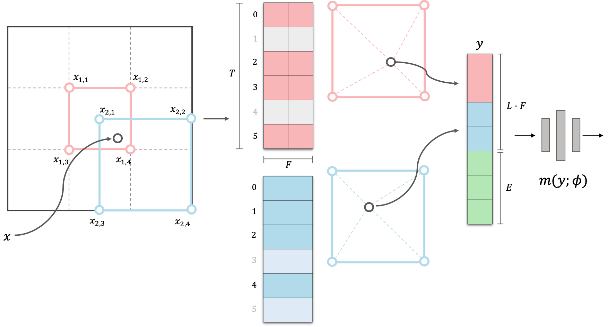
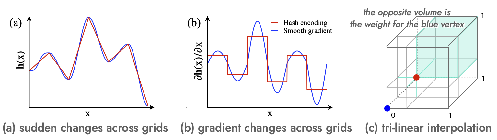
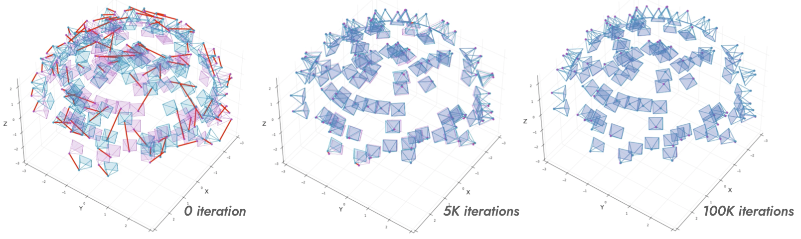

Overview
Multi-Resolution hash encoding (Instant-NGP) has been proposed to reduce the computational cost of NeRFs.
However, when jointly optimizing camera poses and 3D scene reconstruction, naive gradient-based methods often lead to performance degradation.
We observed that the oscillating gradient flows inherent to hash encoding interfere with accurate camera pose registration.
To address this, we propose a method that uses smooth interpolation weighting to stabilize gradient oscillations during ray sampling across hash grids.
Additionally, our curriculum training procedure facilitates level-wise learning of hash encodings, further enhancing both camera pose refinement and novel view synthesis quality.
Method
Multi-Resolution Hash Encoding
- A positional encoding uses the hash tables for multi-resolution features.
- Each feature is the tri-linear interpolation of the eight-corner entries in a grid cube using proportional weights depending on the location of a given point.
- Cannot back-propagate through the hash entries due to random hashing, but through the weights, where the gradients are discontinuous across the grids.
Pros. faster convergence with better accuracy
Cons. back-propagation through ray-sampled positions is unstable!
Smooth gradients for unstable back-propagation
The Derivative of Multi-Resolution Hash Encoding
Using this relation and the appropriate choice of the indices, the $k^{\text{th}}$ element of Jacobian $\nabla_{\mathbf{x}}\mathbf{h}_{l}(\mathbf{x})$ can be rewritten as follows:
Let $\bar{i}$ be one of the nearest corner indices from $\mathbf{c}_{i,l}$ in a unit hypercube, where $\mathbf{c}_{i,l}$ and $\mathbf{c}_{\bar{i},l}$ make an edge of the unit hypercube. Among the $2^d$ corners, we have $2^{d-1}$ pairs like that. Then, we have the relation for $w_{\bar{i}_k,l}$ as follows:
which can be inferred from weight definition, since the relative positions of $\mathbf{x}$ are different for the two cases.
Using this relation and the appropriate choice of the indices, the $k^{\text{th}}$ element of Jacobian $\nabla_{\mathbf{x}}\mathbf{h}_{l}(\mathbf{x})$ can be rewritten as follows:
where $\prod_{j \neq k} \left( 1 - | \mathbf{x}_{l} - \mathbf{c}_{i,l}(\mathbf{x}) |_j \right )$ and the differences between the hash table entries are constant to the $x_k$, which make ${\partial {\mathbf{h}_{l}}(\mathbf{x})} / {\partial {x}_k}$ is constant along with the $k^{\text{th}}$ axis of the unit hypercube. Notice that the last term can be seen as the weights defined as:
where ${\partial {\mathbf{h}_{l}}(\mathbf{x})} / {\partial {x}_k}$ is the convex combination of the differences between two hash table entries.
Therefore, we change the original interpolation to have infintie-differentiable smooth gradient using cosine function,where $w_{i, j}$ is the weight for the $i$-th corner and the $l$-th level resolution.
Straight-through forward function
Furthermore, since the non-linear interpolation can hinder the original performance of the NGP, we propose to use the mix-up of tri-linear interpolation and smooth gradients:
where $\lambda$ is a hyper-parameter, denotes the detached variable from the computational graph.
Experiments
Visualization of the progress of pose refienments
Red lines denote pose error vectors between GT camera poses and optimized poses.

Training time per iteration
- Inherit Instant-NGP's faster convergence
- Inherit Instant-NGP's better accuracy
- Improve stability of pose refinement
Quantitative Results
For the Synthetic (Blender) dataset, our reimplementation utilizing the below tiny-cuda-nn and ngp_pl frameworks demonstrates remarkable superiority, achieving a score of 31.54, surpassing the paper's reported score of 29.86, as well as the scores of 28.96 achieved by GARF and 28.84 achieved by BARF.